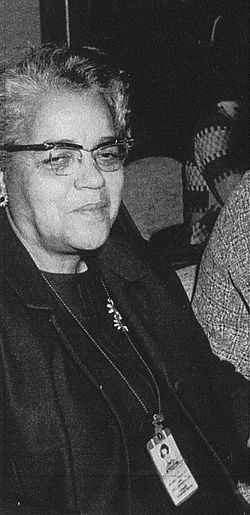

Dorothy Johnson Vaughan (Kansas City, 20 de setembro de 1910 — Hampton, 10 de novembro de 2008), foi uma matemática estadunidense, que trabalhou na National Advisory Committee for Aeronautics (NACA), a agência predecessora da NASA. Em 1949, ela foi a primeira mulher negra a ser promovida chefe de departamento na NASA
Nascida Dorothy Johnson, em Kansas City, Missouri, era filha de Annie e Leonard Johnson. Quando era adolescente, a família se mudou para Morgantown, Virgínia Ocidental, formando-se no ensino médio em 1925, entrou na Universidade Wilberforce, em Ohio em 1929.[4]
Tornou-se professora para auxiliar a família, abandonando o sonho de fazer mestrado, durante a Grande Depressão.[3] Casou-se em 1932, com Howard Vaughan e tiveram quatro filhos. Para ganhar algum dinheiro durante as férias e aumentar a renda da família, Dorothy começou a trabalhar na lavanderia de um quartel durante a Segunda Guerra Mundial.[5] Foi nessa época que viu vagas abertas para gente com formação em matemática para o Langley Research Center, especializando-se em rotas de voo, Projeto Scout, e programação FORTRAN.[3][4]
A Ordem Executiva 8802 proibia a discriminação racial na indústria de defesa nos Estados Unidos, o que permitiu a contratação de negros para os órgãos federais, sem discriminação de cor, ao menos no papel.[5] Foi esta ordem que possibilitou a contratação de dezenas de profissionais negros para agências como a NACA e foi ela quem possibilitou a contratação de Dorothy, em 1943. Uma vez contratada, ela foi designada para a West Area Computers, uma área segregada da instalação, com mulheres negras com formação em matemática, cujos cálculos foram usados em projetos espaciais e de aviação.[3][4]
Dorothy se aposentou da NASA em 1971 e faleceu em 10 de novembro de 2008.
Em 2016, o nome de Dorothy voltou à mídia no filme Hidden Figures,[12] no qual ela é interpretada pela ganhadora do Oscar, a atriz Octavia Spencer.[13] O filme é baseado no livro de mesmo nome, da escritora Margot Lee Shetterly, que documenta as trajetórias de Dorothy, Katherine Johnson e Mary Jackson.[14]